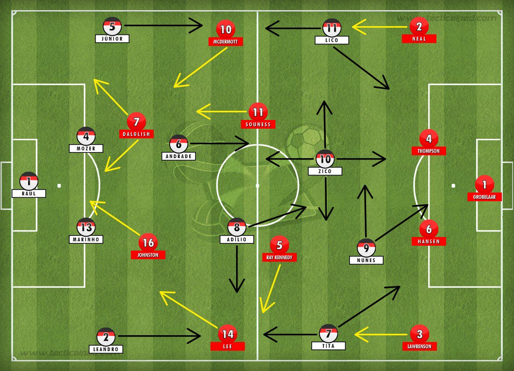

Vamos começar entendendo o que é essa palavra tão ouvida nos dias de hoje. Tática não é só a forma como o time se dispõem em campo, mas também a maneira que ele ataca e defende, tanto de maneira coletiva, grupal ou individual. Ou seja, se o time avança através do jogo apoiado ou ataque rápido. Se ele defende com duas linhas de 4 ou no 1-4-2-3-1. Se a marcação é individual, por zona ou mista, entre outras tantas formas de atacar e defender. Tudo isso é tática.
Táticas do futebol?

O sistema tático 1-4-4-2 é o mais utilizado em todo o Brasil, ele possui uma estrutura bastante defensiva, composta por quatro defensores, sendo dois centrais e dois laterais.
Desse modo, podemos definir o treinamento tático como um "processo pedagógico de construção de oportunidades de aprendizagem, sistematicamente direcionado à melhoria da capacidade de tomada de decisão do participante nos seus diferentes níveis de rendimento no jogo." (Praça e Greco, 2020)
A FIFA reconhece 9 sistemas táticos (4-3-3; 4-4-2; 3-5-2; 3-4-3; 4-2-3-1; 4-5-1; 5-3-2; 4-1-4-1; 4-1-3-2). Os demais são considerados variações destes já existentes. Segundo Carlos Alberto Parreira "os sistemas de jogo não são a coisa mais importante, mas fazem a diferença.